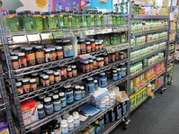
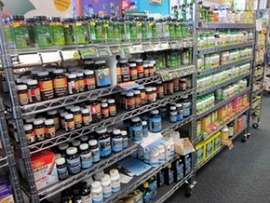
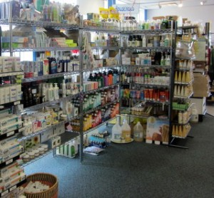
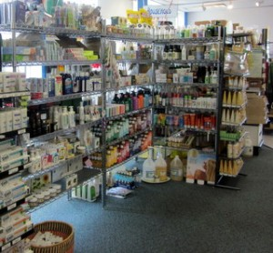

Health and Beauty
Requesting an Item
To request an item not currently in stock, fill out the form below and a staff member will get back to you as soon as possible.
Vitamins and Supplements
Eats carries a large selection of nutritional supplements and herbs from reputable companies. We check our vendors carefully and only carry products from companies that meet our high standards. We are always looking at new products, but we only pick them up if we feel they are safe and effective. In this vein, we do not carry many diet products, because most of them we have found do not work.
 

The main brands that we carry are Now, Nature’s Plus, Source Naturals/Planetary Herbals, New Chapter, Nature’s Way, Carlsons, Nordic Naturals, Irwin Naturals, and Renew Life. We have some products from Twinlabs, Schiff, and Rainbow Light, and we order products from many other companies.


Our staff is friendly and knowledgeable and will try to answer your questions or direct you to reference books to help.
Personal Care
At Eats we try to carry a good variety of traditional natural personal care products, organic products, and newer products that are clean and good. As with most areas of natural health, personal care is ever-changing. We do our best to stay updated on the current news to provide you the safest and best products available. We do many special orders for personal care, so if we don’t carry your favorite product, we might be able to order it for you and get it here in a week or so.
 
